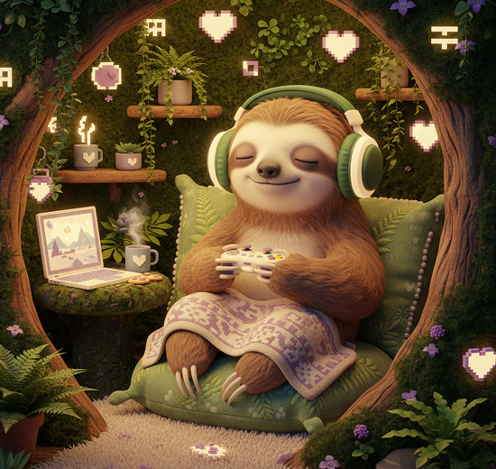
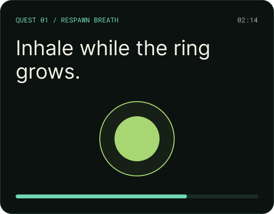

Pause the game. Keep your calm.
Tiny mindfulness quests for gamers who want
steadier focus, softer tilt, and
better breaks— without leaving the party.

CHOOSE YOUR RESET
Three ways back to baseline
No streaks. No guilt. Just a useful pause between rounds.
Respawn Breath
A boxed-breathing checkpoint for shaky hands and racing thoughts.
Hands Off HUD
Release your grip, reset your
posture, and give your eyes a softer target.
Tilt Cooldown
Name the frustration, lower the volume, and queue again with intention.

Mindfulness that speaks gamer.
Clear prompts, visible timers, and zero mystical jargon. Learn one practical skill at a time, then take it straight back into play.
✓ AUDIO OPTIONAL ✓ KEYBOARD FRIENDLY
✓ NO ACCOUNT NEEDED ✓ PAUSE
ANYTIME
PLAYER NOTE
“I used Respawn Breath after a rough ranked loss. Three minutes later I was laughing with my squad instead of rage-queueing.”
— Mina, support main & recovering button-masher
A calmer quest log, once a week.
One tiny reset, one player story, no spam.